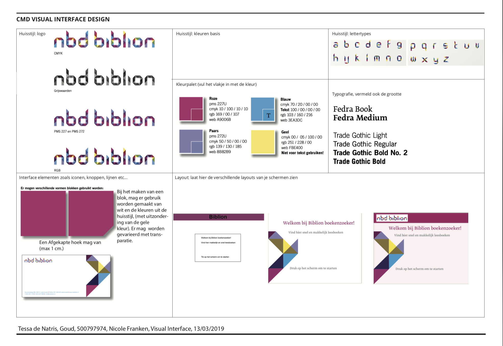

Visual Interface Design
Bij Visual Interface was het de opdracht om een bibliotheek
app te ontwerpen voor middelbare scholieren tussen de 12 en
15 jaar. Je moest hierbij in de huisstijl van de Biblion
website werken.
De eindopdracht was een app, een productbiografie en een ontwerp rationale waarin je de schermen toe licht. In de opdracht moest ook verschillende states te zien zijn.
Ik heb eerst onderzoek gedaan naar de doelgroep. Daarna heb ik de huisstijl van de opdrachtgever geanalyseerd. Ik heb deze analyse gebruikt bij het ontwerpen van de schermen. Eerst heb ik simpele schetschen gemaakt over de content per pagina. Daarna ben ik kleur, typografie en vormgeving gaan toevoegen aan mijn prototypen. Aan het einde heb ik nog microinteracties en gestures toegevoegd.
Ik heb bij deze opdracht met Adobe XD gewerkt.
Stijl analyse:
Begin scherm: